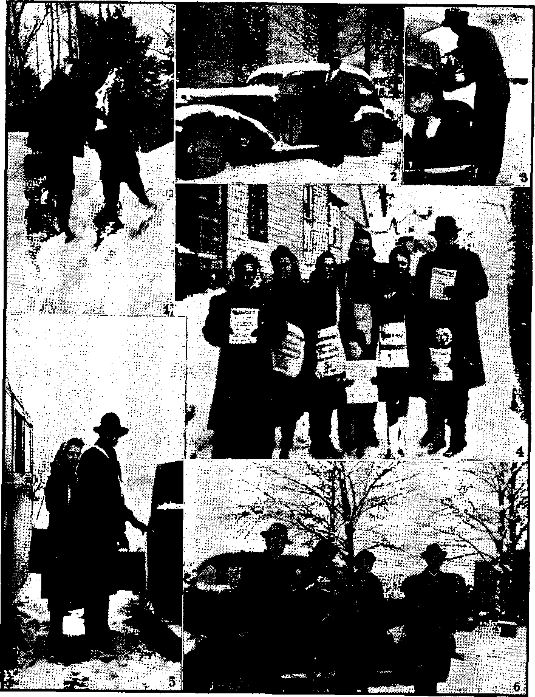

Contents
The Fruit of Hitler’s Concordat
Consequences of Ten Years’ Operation
Terms of the Papal Concordat with Hitler
“Thy Word Is Truth"
How About Pelicans and Siskins'?
Jesse James Film Meaner than Jesse Himself 22
Mexico Shares in tKe “Free Nation’s”
El Salto, Durango, Vennstiano Carranza, Chiapas
Witnesses in Winter (With picture page)
Presenting “This Gospel of the Kingdom”
Position of the Roman Catholic Hierarchy
Published every other Wednesday by WATCHTOWER BIBLE AND TRACT SOCIETY, INC* 117 A da rn a St., Brooklyn 1, N. Y„ 11. S. A.
OFFICERS
President N. IL Knorr
Secretary W. E. Van Amburgh
Editor Clayton J. Woodworth
Five Certs a Copy 'Si a year in the United States JI.25 to Canada and all other countries
NOTICE TO SUBSCRIBERS
Remittances; For your own safety, remit by postal or express money order. When coin or currency is lost in the ordinary mails, there is no redress. Remittances from countries other than those named below may be made to the Brooklyn office, but only by International . postal money order.
Receipt of a new or renewal subscription will be acknowledged only when reaueated. Notice of Expiration Is sent with the journal one month before subscription expires. Please renew promptly to avoid loss of copies. Send change of address direct to us rather than to the post office. Your request should reach us at least two weeks before the date of issue with which it is to take effect. Send your old as well as the new address. Copies will not be forwarded by the post office to your new address unless extra postage is provided by you.
Published also In Greek, Portuguese, Spanish, and Ukrainian.
OFFICES FOR OTHER COUNTRIES
England 34 Craven Terrace, London, W. 2
Australia 7 Beresford Road, Strathfleid, N. S. W.
South Africa 623 Boston House, Cape Town
Mexico Calzada de Melchor Ocampo 71, Mexico, D. F, Brazil Caixa Postal 1319, Rio de Janeiro
Argentina Calle Honduras 5646-48, Buenos Aires
Entered as second-class matter at Brooklyn, N. Y.r under the Act of March 3, 1879.
Mass Hypnosis Is Demonism
♦ At New Brunswick eight thousand school children went into violent hysterics over the presence of an actress. They rushed toward the platform in a screaming tumillt that lasted 35 minutes. Police and the parade marshal were unable to restore order and it was necessary to abandon the program. There have been such exhibitions in France and elsewhere of mass hypnosis of children,' and there seems no reasonable explanation except that it is an outburst of demonism. The demons are now loose in the earth and it behooves all to be as calm and composed as possible, especially when in the presence of large crowds.
Black Magic in Montreal
♦ Black magic, i. e., fortune telling, i. e., spiritism, i.e., demonism, i.e., guidance by the devils, i.e., astrology (and some 25 or 30 more names which mean the same thing), is almost as bad in Montreal as it is in Washington, D.C. In the latter city this business'is legalized which in ancient Israel was punished with death. In Montreal they recently arrested twenty of these in three days. Eight of them pleaded guilty and were fined $50 to $500 or a month to six months in jail. This form of religion is one of the oldest and one of the’worst known to man.
■ Japan’s Aims at the Vatican
♦ The United Press writer Miles Vaughn declares that Japan’s aims at the Vatican are to exert pressure for a compromise peace in which Japan would be left dominant in East Asia and Germany and Italy would be left in control of continental Europe. Such a negotiated peace, of course, would, from the standpoint of Japan and Germany, be merely a lull in which they might get ready for one more final attempt at world domination.
“And in His name shall the nations hope.”—Matthew 12:21, A.R.V.
Volume XXV Brooklyn, N-Y., Wednesday, February 16, 1944 Number 637
The Fruit of Hitler’s Concordat
Consequences of Ten Years’ Operation, 1933-1943
A TTENTION today is divided between -CY several distant battle fronts, with all American hopes staked upon the success of those far-flung lines. History is streamlined to airplane velocity! Major calamities vie with overwhelming victories in another quarter, for the spotlight of momentary interest. The importance of events is blurred by their multiplicity, their simultaneous quantity, and their headlong speed!
Since the vital interests of Americans are engaged throughout the entire globe, with happenings everywhere at once tending to raise or lower the national blood-pressure, and all families heavily committed in the outcome, the present brings numbness to the faculties, and confusion to the mind. Lost in the whirling circle of global action, shocked by the so-frequent news of disaster, scarcely relieved by occasional good tidings, the acceptance of despair has come to paralyze one’s thoughts. This stupor is exactly what the enemies have counted on, and must be resisted to survive!
The adversary has thus directed his attack more against the minds even than against the armies! Particularly, Axis enemies have sought to destroy the national reasoning faculties. Masking the significance of events already crowded by the headlines of regimentation and bad report, comes a daily flood of propaganda. The mind that is staggered by shock becomes the easy victim of misinformation. In order to render some relief to the victim, as well as strike a blow for truth, it is considered timely, appropriate, and useful to give a calm survey of the past decade, which is the corridor just traversed loo rapidly. Long enough have the people hurried before the lash of fear! It is time, and past time, that they look dispassionately at the events that brought them to the present; at the clues that might long ago have identified the criminals, had the people then paused for deliberation; so, view the past ten years, slowly, in retrospect. The review will seek motives, explained and revealed by deeds, which speak more loudly than the words so often employed for subterfuge.
“News,” says an ancient Chinese proverb, “is nothing more than the same old thing happening to different people.” History is made up of such news. Applying this rule to the past decade discloses not only a sameness, of events, but also an identical purpose binding together certain identical actors. Amid the litter of torn-up promises, and the wreckage of desolated nations, clearly appears a significant alliance, bound by a published agreement, and performed with equally visible results. That agreement, with its results, is treated under the title.
Its importance can be properly measured only after consideration of the facts submitted herein, with fully documented evidence and bibliography supporting. The magnitude of this pact can be estimated, however, by a catalogue of the points contended: That it combined by valid contract, serving their mutual interests, the most active powers for war-incitement upon the earth; that its principals have performed its terms with fanatical zeal; that the present is in reality, however con.-: fusing in appearance, but the sequel or other planned chapter in the long-range strategy of destruction, publicly 'embarked upon by the concordat of 1933; that it was the chief clue to the world of the formation of a central brain, council or directorate, which plotted with greht brilliance and concentrated purpose for world domination; that the parties combined by the concordat tenaciously and cunningly allied themselves with every malcontent and selfish interest, in a world peculiarly opportune for such alliances; that the outspoken facts, and overt acts of partnership between religionist and dictator, refute a thousand denials of such contract; and that the fruits of a world of bitterness largely stem from that tree.
Tt is not necessarily contended that the plan was fully matured ten years ago, nor that the determination to conquer the world was openly announced. But that the purpose was fully agreed upon, and that the concordat formed an alliance of those who had already held the same purpose for many years prior thereto, and had planned accordingly, is contended. It also seems likely that although the original project may have called for the destruction of England, now clearly impossible, it could, by alternate expedient, be accomplished by negotiation with England, and was more favorable to a super-national confederacy of the religious and commercial, political clique, even if Axis domination failed. In any case its rally cry and its preferred arrangement was Fascism. According to the conspirators, plans for each country were formulated with the cold precision of a surgeon’s knife. Every nation would by compulsion, persuasion or betrayal be placed in the niche assigned in the new world-wide arrangement of their designing. Since this was a scheme for world domination, it was of necessity global, involving every country. It is important to remember this, because the conspiracy which bred Fascism, Nazism, and the other pestilent “isms” bears the earmarks and imprint of central planning. Though, embraced first by the pope in Italy (1929), its spearhead was Germany. To illustrate -that all these “isms” come from one factory, and should be labeled “Made in Nazi Germany”, Allan Chase demonstrates that the Falange, supposedly the Spanish imitation of Nazism, is in reality nothing more than a branch of the dread Gestapo. Hugo F. Artucio and Betty Kirk reveal the Nazi blueprint for Mexico, Latin America, and South America, with five zones carving up and replacing the republics to the south. Investigators everywhere warn of subversion and treachery, envisaging the Nazi tentacles clutching the whole earth. Strangely, however, they fail to .see Fascism’s necessary alliance with religion, nor do they detect the incalculable advantage and great power derived by this alliance.
Fascism is hereafter used as a generic term to include all the “isms” which have the same purpose, enslavement. Its unpopular synonym is therefore “slavery”. It being wmrld-wide in growth, but springing from a single “green bay tree” of wickedness, it is deemed fitting to consider the conditions in the major countries of the world, when it received its life-giving impetus to power by amalgamation with the greatest religious power, in 1933. ’
Historical Background . ■
Conditions somewhat prior to 1933 were unusually favorable to men of unscrupulous purpose. The United States was stunned by depression and unemployment, England vacillating and playing like a child with her customary balance-of-power politics; while France, the third of the great democratic powers, was dying from within. Russia was. largely offended by deliberately bad statesmanship, and isolated from her natural allies. Japan, on the other hand, began to see the achievement of her hundred-year-old dream of empire, for which she had long reserved her resources, and enlarged a highly efficient war machine. The natural obstacles to a Japanese empire in the Pacific were England, America and Russia. From the outset Japan must have looked to her former enemy, Germany, to assist in the hacking-up of the Anglo-American combine. Looking back, it is also easy to see how skillfully she played her hand.
Germany had been largely healed of her “deadly wound” received in World War I, and this through Allied loans, chiefly American and English. In his recent speech, Christmas eve, 1943, President Roosevelt admitted this aid rendered to Germany. He said:
After the armistice in 1918, we thought and hoped that the militaristic philosophy of Germany had been erushed; and being full of the milk of human kindness we spent the next twenty years disarming, while the Germans whined so pathetically that the other nations permitted them, and even helped them, to rearm.
For too many years we lived on pious hopes that aggressor and warlike nations would learn and understand and carry out the doctrine of purely voluntary peace.
The well-intentioned but ill-fated experiments of former years did not work. It is my hope that we will not try them again. No, that is putting it too weak. It is my intention to do all that I humanly can as president and commander-in-chief to see to it that these tragic mistakes shall not be made again. [Quoted from the New York Times, December 25, 1943]
Italy was already tied fast to the Papal chariot by the Lateran Treaty of 1929, while Spain’s efforts to throw off the yoke of clerical bondage were viewed with cynical amusement by the plotters of the “New’ World Order”.
A few more details may serve to bring back to mind the scene of ten or twelve years ago. On January 29, 1932, Japan had instituted her shocking assault on Shanghai, which awakened the world more than her invasion of Manchuria and capture of Mukden the previous fall, and regarded by some as the beginning of World War II. Remember the Geneva Conference, which dealt with the Japanese hostilities, .dallying with the matter for most of the year? The Nipponese were defended' before many impotent sessions of the League of Nations by none other than Yosuke Matsuoka, so prominent in pre-Pearl Harbor news for his visits to Hitler and the pope. Came the spring of 1933, when the Japanese lost patience with those who stupidly could not be taught the “glorious” necessity for the killer-campaign, and bolted from the League.
Sardonically the recorder of history notes that 1932, while the Axis was arming to the teeth, was the year selected by the League of Nations to urge disarmament. During the deliberations designed to bury everybody’s hatchet, Archtraitor Pierre Laval w’as French premier, perhaps already consorting for the death of his country. Certainly disarmament was a democratic error, an expensive economy, considering the war debt, which presently will have to be measured in “light years”.
American eyes were focused inward, sadly introspective, upon her financial difficulties. The stock panic of 1929 had left its marks of havoc upon business and nearly every individual. Little recovery had been made; most blamed the Hoover administration, which had gained no popularity by the international debt moratorium of 1931. In the 1932 fall elections Franklin D. Roosevelt was elected for the first of a now unknown number of terms. The situation was so critical that during the spring of 1933 all American banks were closed by executive order, many never to reopen, and the WPA and killing of pigs began. Those who recall those days will confirm the fact that the United States was too painfully preoccupied with her own problems to voice and back up strong sentiments in world affairs.
Britain also was largely involved in fiscal and monetary problems. In 1931 sfee had been forced to abandon the gold standard following a run on the Bank of England. Ramsay MacDonald was in the middle of his career as prime minister, addicted to British “limited-liability” policy, a man of “materialism in the heart and sentimentalism in the head”. Charged with much blundering, his planned - World Economic Conference, which met in London the summer of 1933, and was chiefly devoted to American and British troubles along that line, proved no more successful than the Naval Conference of 1930, nor the multitude of .other conferences and councils held during the past decade. Although German war reparations had been virtually ended at Lausanne a year earlier, the London World Economic Conference was ill-omened by announcement, a few days before its opening, of the new Hitler government decree suspending all German debt payments, the chief creditors being the conferees.
Hitler had been appointed chancellor four months earlier, January 30, 1933. Bitterness of defeat in the first World War, coupled with the harsh terms of the Versailles Treaty (June 28, 1919), particularly the economic clauses placing the full responsibility for the war on the Central Powers, and requiring heavy indemnities and consequent economic suffering, prevailed in Germany? Of all tilings, humiliation and reproach are the most difficult for the human creature to endure, and here was the spectacle of a whole nation developing the bitterness of the underdog. In such soil Nazism flourished, which was one of the results relied on by the dictator and his religious partner. Briefly recalled, the staggering debt demanded by the Allies still amounted to thirty-three billions in 1921; and even the modified Young Plan of 1930 arranged for annual payments to extend fifty-eight and one half years longer, the first 37 years requiring payments of $473,000,000 annually! This meant that those unborn during the first World War must shoulder its unbearable expense for their whole lives! Nor. does this furnish an apology for Nazism, but rather reveals the German misery which fed its rise to power.
Aggravating her wounds was the Allied army of occupation, which did not leave German soil until May, 1930. Although Germany had largely rehabilitated herself with plentiful loans from Erance, England, and America, yet this source of income was reduced to a minimum from 1929 to 1931, critical financial years for England and America, as noted before. “When the Nazi regime came to power, the depression had reached the depth of the trough. The unemployed counted more than 6,000,000, industry and trade were stagnant, finances were imperiled.” (The Origins and Background of the Second World War, Haines and Hoffman, page 347) This was the weakened state of Germany, which bred the Nazi disease.
Von Hindenburg, Prussian aristocrat (Junker), war lord, and last president of the Weimar Republic (so called because its constitution was adopted at Weimar, July 31, 1919), appointed Hitler chancellor (prime minister). According to several Catholic sources, including Fritz Thyssen’s I Paid Hitler, this was maneuvered by the Papal-decorated Franz von Papen, in close conference with Papal Nuncio Pacelli .(both Thyssen and von Papen are admittedly Roman Catholics), through the stratagem of telling the aged president (who died August, 1934) that von Schleicher was about to take him prisoner, (As late as November, 1943, von Papen still acted as “Hitler’s ace diplomat” and go-between for the dictator and the pope.)
Thereafter events moved rapidly. The Reichstag fire, on February 28, furnished the pretext for an emergency decree abrogating freedom of all kinds, while a new election was called for in March. With freedom gone, the Nazis readily controlled this election, but, employing all kinds of juggling and violence, could poll only 44 percent of the vote by their own count! Opposition was, however, annihilated by destruction of small minorities in the Reichstag (Legislature), and the dissolution of the Catholic Center Party (Zentrum) by direction of Papal Nuncio Pacelli. The Arbeiter Zeitung, of Basle, Switzerland, published Catholic Thyssen’s letter under the title, “Pius XII—as Nuncip—Brought Hitler to Power.” (Germany entered the League in 1926.)
France was naturally the nation most alarmed by the rise of Nazism. The French heyday had come in the fall of 1931. While financial panic gripped the rest of the world, in which seventeen nations, with the inclusion of England, went off the gold standard, this nation was unscathed. Due largely to German reparation payments and native French thrift, her financial strength matched her political and military power in Europe. By the terms of the same Versailles Treaty, which provided the gift of reparations, her military strength was maintained in superiority to Germany’s. Together with Czechoslovakia and Poland, France and Belgium formed a restrictive semicircle, all members of which were interested in checking German expansion. (The Sudeten part of Czechoslovakia may be excepted.) British and American sympathy had long since begun to wane. France had been an obstacle to German recovery, in which both nations had had a stake; while the repetition about French sacrifices had become wearisome, and French strength was unwelcome to Britain’s balance-of-power susceptibilities. This may partly account for British non-interference with Fascist Franco, and the Munich appeasement of Hitler, the folly of which
FEBRUARY 1ft, 1944
policies became apparent too late. French national illness gathered nomen-1 turn after 1933. !
. Russian relations, or rather the aims of the Franco-Russian Mutual Assistance Pact, intended to forge a link against Germany, were frustrated by Pierre Laval, whose tracks are found near every act of treachery against France; Russia made several alliances but was virtually isolated from France and England. European distrust of the Soviet gave the Nazis much assistance in their pose as the foe of Communism.
Italy and Spain stretching down like fingers to the continent of Africa, which must also be conquered, held key geographic places in Axis plans. Italy was already Fascist and belligerent, being well tied to Rome’s religious ambitions by the Lateran Treaty (1929). Together with Sicily and Pan teller ia (captured first by the Americans in their advance upon Italy) the country formed an easy bridge to Africa, and threat to English commerce and colonies. Pierre van Faassen believes the Nazis’ objective aimed to control the coast of Europe and Africa, and, together with Japan, to nullify English sea power by destruction of all her bases. Spain, containing the English Gibraltar, where the strait is so narrow that the African coast is clearly visible, was likewise marked for seizure. Besides its nearness to Africa and forming a bulwark inimical to France, Fascist Spain was to play another role, even more important. Spain was closest to America, not only in distance but in blood and language ties. To her was assigned the role of enlisting sympathy in both North America and ’South America through affiliations of the mother tongue, especially among the Spanish aristocracy which controlled so many of the South American and Central American countries. Many of these (as in Argentina, where “fifty families own more than 75,000 acres each” and are “overwhelmingly Catholic”, with large numbers of Germans and
7
Italians) yearned for the return of Spanish, which meant Fascist, control. Such were to be furnished substance for their dreams.
These were briefly the conditions in the world. Not alone important as a background and setting for the merger between dictator and pope, above all, . they furnish a key to understanding the 1 opportune ripeness, the timeliness of such contract between aggressors. Next to be considered are the parties to the contract.
pacelli and Hitler
In the summer of 1933, Eugenio Pacelli, now Pope Pius XII, was an experienced diplomat, thoroughly familiar with the politics, intrigues and underground of Europe. He had been entrusted with a Vatican commission to the kaiser near the end of the first World War (1917), and thereafter spent twelve years in Germany serving in various Papal offices. Now, with knowledge born of keen observation, mastery of eight languages, and the unlimited facilities for obtaining inside information found ready for his use at the collecting agency of Vatican City, he envisaged that the time was ripe for alliance with the Hitler Germany. He decided, and advised Pope Pius XI, to tie Catholic hopes of world domination to the Nazi star.
Besides dreamers and madmen, there were probably only a few men on earth in 1933 whose mental scope was great enough to contemplate world domination. It was, however, envisaged by the chiefs of the Roman Catholic Hierarchy. Indeed this had been the expressed goal of their organization since its origin some 1500 years ago. The bloody crusades staining by-gone centuries had this aim, an aim never relinquished, as manifest in the “holy wars” of Hitler. One thoroughly saturated with this bold ambition, which accepts bloody war as a justified means to a “proper” end, rulership by religious Rome, was Eugenio Pacelli. Not a dreamer was Pacelli.
Astute, “hardheaded statesman,” he saw alliance with Nazi Germany as the logical and opportune step for achievement of Catholic age-old purpose. Remember that he knew the stage of Europe, its languages and diplomats, not only through twenty years of envoy activity, but also by the complete and revealing intelligence system supplied by an army of espionage and confessional priests. “The Vatican’s intelligence service is incomparably the best in the world, and Pius XII was an expert international observer before he was Pope.” (Pittsburgh [Pa.] Press, September 24, 1942)
The present pope’s upbringing and experience caused him to be the finished product of that sinuous doctrine known as Jesuitism. The Jesuit is the most unscrupulous and the most deceptive of all schools of religious practitioners. It is the most hated secret order in the world and has at one time or another been expelled from most countries of Europe. (See Consolation issues of November 26 and December 10, 1941, article “Jesuit Destroyers".) But, judging by the Jesuit betrayal of countries overrun by Hitler, and the Jesuit pattern adopted by the Nazis, it seems clear that the Jesuit reactionary craft prevailed in the training, predilections and policies of Pacelli.
Time magazine, issue of August 16, 1943, contains an incomplete biography of his life. According to this article, he was born in 1876, “five years after Italy achieved unification by Vittorio Emanuel H’s seizing Rome from the Papacy, and Pope Pius IX immured himself in his last possession as ‘Prisoner of the Vatican’. . . . Both Eugenio pacelli’s grandfathers were Vatican functionaries. His father was dean of the Vatican law corps." From about 1900 until 1939 he continued in the Vatican’s foreign relations office, about the last ten years as secretary of state. In the latter year he was elected Pope Pius XII. McCabe shows that Pacelli wms of an aristocratic family, while he was connected with
Italian high finance through his uncle, the founder of the Banco di Roma; and with politics through his brother Francesco Pacelli, who had more than one hundred secret conferences with Mussolini.
It is hardly conceivable that the pope’s “imprisonment” stirred the liberator spirit in the young Pacelli. The “imprisonment” was self-imposed, a gesture to elicit international Catholic sympathy, just as the reported “dangers” from the Nazi forces in St. Peter’s square have lately been used for the same purpose. But perhaps the dimness of the Papal sun at that time, while the Papacy was shorn of temporal power, which was an eclipse of the brightness of its power under Innocent 111 “(who exercised effective political control over all Italy and much of Europe)”, caused a yearning in the young priest for the old position of dominance. At all events there seems little doubt that, guided by a shrewd intelligence, a fierce ambition has long burned in the heart of archdiplomat Pacelli.
Other sources than Time magazine must be drawn upon for facts in the pope’s life during 1933, the year under consideration. It is remarked in passing, that Time’s tactful omission of 1933 in the papal biography is a fair example of the reticence and deference shown by the press generally, and considered herein in detail later, where the Roman Catholic Church is concerned. It is, to say the least, faintly amusing to see the editors performing this obeisance, kneeling to a religious institution, while their custom has been to ridicule the foibles and weaknesses and even the faith of others. Grotesquely now, the cynical “wolf of the news” bestows an atvkward pat upon the head of the Roman leopard. Time excuses this diplomatic pact in a later summary of charges . made against the Vatican as “The 1933 Concordat with Hitler 'in spite of many misgivings’”. (Page 58)
Far from listing “many misgivings” his official Catholic biographer, Kees van Hoek, wrote in 1939: “Cardinal Pacelli has always been known for his strong German leanings.” (Published in London in 1939 by Burns, Oates & Washburn, Ltd., publishers to the Holy See, and quoted from article by Pierre L’Ourson, "Pro-German ism of Pope Pius XII,” April, 1943, issue of The Converted Catholic) The same biographer discloses also that from 1917 to 1933 the present pope spent more than twelve years in Germany.
Monsignor Pacelli, as nuncio in Munich in 1923, actively opposed the French occupation of the Ruhr Valley when the Germans refused reparations payments, and caused Pope Pius XT to condemn the French occupation as the “Ruhr adventure”. lie obtained a concordat with Bavaria in 1925, and one with Prussia in 1929 after his appointment as nuncio in Berlin.
Pacelli was long an intimate of Matthias Erzburger, zealops Catholic and leader of the Reichstag’s Catholic Center Party, which was later dissolved at the instance of Pacelli to make way for unopposed Nazism. He was, during the years of his German residence, an intimate of Friedrich Ebert, first president of the German (Weimar) Republic, and also of its last one, the monumental Paul von Hindenburg. Thyssen, the Catholic industrialist, who, together with munitions manufacturer Krupp, admits financing Hitler, reveals that Hitler and Pacelli had many conferences together outlining the later concordat of 1933.
The nuncio likewise knew Hitler well, his ability as rabble-rouser, his imprisonment for attempt to overthrow the government, his tics with and appeal to the most bestial element of the German population, and, most important of all, and least believed in America, his devout Catholicism. Many Catholics would like to believe that Hitler is not a Catholic; but that is because they do not understand the purpose of their pope, who had selected to advance Hitler in part
for that very reason, and, as subsequent events prove, would never have chosen for the role any but a Catholic. Doubters of Hitler’s membership in the Catholic church will be enlightened by perusing Mein Kampf, and Wer Ist's, the German H'Ao’.s Who. In the past, Consolation has reproduced pictures of Hitler worship. „ ing in Catholic cathedrals. See Febru-*ary 3, 1943, issue, reproducing such a picture from the London Catholic Herald. This same recognized Catholic authority admits that Hitler and Mussolini are both Catholics. (Issues of July 5 and 12, 1940) Of Hitler’s Catholicism no doubt remains. Appointment of Catholic overseers in every country conquered by the Nazis is a “clincher” which may not be overlooked even by the skeptical. Hitler therefore represented to Pacelli the preferred form of German government.
The question arises at this point as to why the Papacy and Pacelli found Germany worthy of so much attention. The answer may be found in some design for self-interest, because the Papacy is concerned in other nations only as such may be used to advance her own ends. It is furnished by a diplomat long connected with the League of Nations:
“All his life Eugenio Pacelli has taken an active part in one of the most secret and complex intrigues of our time: the patient struggle of the Papacy to regain and extend its temporal power. In this struggle, for the last seventy years, whenever a major issue of international politics was at stake, the Vatican has hitched its star to the Germanic juggernaut,”—Pierre L’Ourson, in The Gospel Witness and Protestant Advocate.
This agrees with the official title “The Holy Roman Empire of the German Nation”, the dickerings of the nominally Protestant Kaiser Wilhelm with the Papacy (through Pacelli), and the request long before the first World War that the kaiser act as the “sword of the Roman Catholic Church*’, later offered to and accepted by Hitler.
Germany then was the spearhead of “the king of the north”, foretold in Bible prophecy. Pacelli, called by Britain’s ambassador Viscount d’Abernon “The best informed man in the Beich”, well knew that Germany was the most powerful of any country on the continent, that England and America were presently impotent through preoccupation, that Catholic power was waning through the loss of millions of adherents (the Catholic lay population) seeking freedom from the Papal yoke in socialist-democratic governments; that the hated influence of the French and American republics fast sweeping Europe signaled for urgent Catholic Action. The time was ripe and the stage was set for the com summation of the pact that rocked the world, and plunged the nations into an ocean of blood!
Demonic forces maneuvered the Hitlerian concordat. It was far too complete an instrument of race extermination, the Devil’s own purpose, to be the inven-, tion of mere man, however “brilliant”. The terms nevertheless (later summarized) will not impress the reader as extremely sinister. Papal approval of the flow of blood may not be discerned by all in its army clauses. But moral consolation for a well-known German blackguard, convicted seditionist, and moral degenerate, can be denied by no one. When one seeks the underworld for services, when the gangster is hired, it is because the purpose requires' the criminal.
Remember also that any number of secret clauses may have been agreed upon when the document was formed. Again note that it was a flexible contract, capable of. extensive expansion, and, more important still, unlimited fulfillment. Some will say that the fulfillment or carrying out of the compact is the important thing, not the words. They are right! It is the bloody fulfillment, however, that proves the understanding,. just as the crime reveals its planning. But the very existence of the concordat is an admission that Papal hopes still rested upon the German juggernaut. Later, as we shall see, the campaign unfolds, revealing the previous marriage between religion and the slaver. Paeelli and Hitler well represented the organizations behind them.
Existence of Concordat Proved
As tribute to the power of the propaganda unleashed by the mutual friends of Hitler and the Vatican, it is necessary to prove to many that such an agreement exists. Many Catholics believe that it is an invention by Protestants intended to embarrass the pope. The mere mention of such a “deal” is considered a fantastic libel, as far from the realm of truth as Hitler’s doing a good deed. Also because of a newspaper halocampaign ascribing to the pope the highest of virtue, and an equally industrious campaign to repress any details that might cut the glamour off the most highly advertised ‘proponent for peace’ (“whose name is rooted in peace”), namely, Pius XII, his alliance with Hitler, now of ten years’ standing, is denied altogether. Such denial is echoed in many non-Catholic circles, who are not acquainted with the facts.
The document is, of course, a matter of record. The term “concordat” is derived from the Latin past participle of the verb concordare (concordatum), literally meaning “agreed”. It is a term now used specifically to designate a contract between the Vatican or pope and a dictator government.
Of first importance to all Catholic readers is the fact that a booklet published by the National Catholic Welfare Conference, The Nazi War Against the Catholic Church, devoted a whole chapter to its discussion, from page 17 of which the following is quoted: “On July 20, 1933, the concordat was signed' at Vatican City by Franz von Papen, vice-chancellor [Hitler was then chancellor] and plenipotentiary of the Reich, and Cardinal Paeelli, papal secretary of state and plenipotentiary of the Holy See.” This should be sufficient evidence for all Catholics, because it is hardly an admission that would be made except that many have demanded an explanation.
However, the terms are not found in this Catholic booklet. Indeed attempts to get a copy in either English or German were rendered extremely difficult. Replying to inquiry the New York Times Information Bureau stated: “We regret that we cannot give you the information about the concordat, but suggest you consult your local library.” (September 16, 1943) It was learned that a part of the German copy appears in the April, 1943, issue of The Converted Catholic Magazine, but this was not made available to Consolation. An extensive search in the New York Public Library at first proved fruitless, but finally both a German and an English copy were produced by the librarian.
Review of the document itself gains importance because of the great prominence given Pope Pius today as world peace mentor. (See Peace—Can It Last?) Since the present pope is slated to be “dean of the conferees” at the peace table, which will decide the fate of all nations, an agreement made by this prospective peace candidate with the foremost aggressor nation, and never canceled by either pope or Nazi, should not be overlooked. It behooves Catholics particularly to study this instrument of the pope’s decision, approved, of course, by the “Supreme Pontiff”. '
*
Terms of the Papal Concordat with Hitler
“The Concordat of the Holy See with Germany” contained thirty-four articles, with a supplementary protocol, or additional memdrandum, delineating, supple. menting, or explaining certain of the articles. Besides confirmation of the Bavarian and Prussian concordats (also achievements of Paeelli) and the several clauses concerned with internal church organization which are not of public interest, it provides:
That the Catholic church shall have
full liberty to practice religion (Art. 1); Catholic priests and clergy are to be protected by the German government in performance of religious duties (Art. 5); shall be exempt from civil duty, income tax levies, and obligation to reveal confessional secrets (Arts. 6, 8, 9); punishment for misuse of clerical vestment and insignia must be identical to punishment t for similar misuse of the German military uniform (Art. 10).; recognition of Hitler’s right to veto any candidate for the'office of bishop because of doubts “with respect to general political considerations” (Art. 14, which virtually assured the appointment of Nazis to the chairs of bishops and archbishops; the operation of which clause is observable in the pastoral letters from the Catholic bishops’ conclave annually at Fulda, reiterating praise for the Fuhrer); Catholic bishops are required to swear allegiance to the Hitler government (Art. 16); for state maintenance of Catholic faculties in the state universities and for continuance of existing government subsidies or aids to Catholic institutions (Arts. 19, 20); Catholic religion is required to be taught to ail Catholic pupils and students in public schools and colleges, by teachers selected by the Hierarchy (Arts. 21-24); priests are permitted to perform valid marriage ceremonies before the civil marriage also required (Art. 26, which also allows for “later and more extensive regulation of legal matrimonial questions”); for appointment of army chaplains approved by Hitler (Art. 27, “The chaplains in regard to the troops assigned to them have the same rights as curates in regard to their parishioners”; which really means that the Catholic chaplains in the swelled armies of Hitler could stop this war tomorrow if they wanted to do so); all Catholic churches are pledged to pray for the welfare of Germany (Art. 30). Students are privileged to compare this summary with that found on pages 344-345 of The Origins and Background of the Second World War.
. The real significance of this document is that it binds the Vatican to Nazism. The comment of Pope Pius XI is pertinent proof. Speaking of the great service which Italy and Germany had rendered the Catholic Church in its fight against Communism (then called Bolshevism) he stated: “For that reason I shall conclude this concordat with the young Germany of Chancellor Hitler.” Shortly thereafter was added the Nazi acclaim: “By signing the Reich’s Concordat German National Socialism [Nazism] is acknowledged by the Catholic Church in the most solemn manner.” (Nazi, organ, Volkischer Beobachter, 1933) On August 15,1933, Archbishop Dr. Groeber held a solemn pontifical mass celebrating the conclusion of the concordat. “The Episcopate of all German Dioceses . . . was glad to express ... readiness to co-operate to its best ability with the new government.” (Letter from Cardinal Bertram to Hitler after signing of concordat) This was then the year of all years chosen by the pope to declare a “Holy Year”.
Before considering the appalling results shortly devastating the world, an understanding of the Papal part in the ' debacle is made clearer by consideration of the Catholic ruling system, its form of government and functions.
Papal Organization
It cannot be overemphasized that the Papal organization is the most autocratic and, at once, the strongest the world knows. Its description may well begin at its capital and official residence of its chief executive, the pope, namely Vatican City. Viewed in. the excellent aerial sketches from the December 26, 1938, and the August 9, 1943, issues of Life magazine, the Catholic capital appears as a walled fortress, in the northwest section of Rome, not a suburb, but completely surrounded as an island by the city of Rome. Only the size of a golf course (109 acres according to
Life, 108.7 according to The Christian Century, September 15, 1943, p. 1032), it is nonetheless a formidable structure, complete with a garrison (ff Swiss guards, barracks, sentry towers, and continuous surrounding walls for gun emplacements. Past the colonnaded porticoes clasping St. Peter’s Square (where the Nazis are now said to be on guard) and at one end of this circular court, lies the entrance to Vatican .City through St. Peter’s Basilica or Church. This is, of course, only one of an unknown number of entrances and exits, which probably come out conveniently in many parts of Home, St. Peter’s Church, which is the largest in the world, broods above the square where the Nazis are said to stand guard. Just what paratroops in this open court, as defenseless from snipers or machine gun on the church embattlements as the pigeons which feed in the square, could -do to endanger the city does not appear to
the writer. Is there any military strategy calling for the “protection” of a barricade by means of a contingent deployed in a plaza commanded by and at the mercy of the guns of the barricade? This point seems worthy of conjecture, as likely more “sympathy propaganda” for the “prisoner” of the redoubtable fortress. '
The probable reason for Marshal Albert Kesselring’s paratroops in St. Peter’s Square is to guard the Vatican, even as claimed. Later dispatches tell of Kesselring’s posters threatening death to a,ny persons harming Germans who, the press report declared, had been assaulted by Italians in Rome; while in October the pope was offered a haven in Liechtenstein (a Catholic duchy on the Swiss border) or in Germany itself. These Nazi precautions in behalf of their ally are made understandable by remembering that the Vatican was stormed by irate Italians in 1849. Life’s historical sketch of August 9, 1.943, contains two significant paragraphs: “Italian disaster was at the battle of Novara, 1849, when Charles Albert, left in the lurch by the pope, Mazzini and Naples, was routed by Austrian army/’ “Attack on the Vatican by people of Rome was a by-product of the war, because Pope Pius IX was .supported by Austrians, lie fled, leaving 'a republican triumvirate under Mazzini.” Comparison of later difficulties encountered by the Italian liberal government with the Vatican1 (1870-71) shows that the “Pope’s shop” has been unpopular with many Italians, and fear of Italian retaliation, when American liberation appeared in sight, upon the greatest enemy of freedom was not unjustified fear on the part of the Germans. Supporting the facts above set forth are two items from the Tribune,-Sun of San Diego, Calif., one dated October 28,1943, wherein Dr. J ose Manuel Llobet, Argentine minister to the Vatican, said at Barcelona, Spain, that conditions at the Vatican are “perfectly normal”, and the other item, dated November 2, 1943, wherein the United Press says that the Vatican radio has reported German occupation troops have respected Vatican City, and the German ambassador there has guaranteed a continuance of their good conduct.
Time, magazine informs us that within the military estate is completely modernized, equipped now with elevators, 800 telephones (even during the war connections have been promptly made between the pope and Archbishop Spellman), power plant, short-wave sending equipment, and a railway station. Turn now to the structure and personnel of this vast religious system.
Here again the strength of Catholic organization must be emphasized. According to Time, again, the rulers of this realm are first the pope, “Supreme Pontiff of the Holy See” (and bearing a great many other titles), who is “absolute rule?’ and “infallible formula-tor” for the following, having authority in the order named: 47 cardinals, 13 patriarchs, some 2,000 archbishops and bishops, about 300,000 priests and some 365,000,000 Roman Catholics throughout the world. (According to McCabe this figure is more probably about 300,000,000, reflecting a loss of about 65,000,000 Catholics in the past decade.) Nonetheless this is by far the greatest and most powerful organization in the world.
It is also extremely autocratic. While in America Roman Catholic Church law is not held binding upon its citizens, in Catholic countries such as are now under the dictators Papal law is supreme and critics of the Roman Church are frequently sentenced to death. To avoid the outcry for such inquisition the “offender” may likely be charged with Communism. McCabe makes interesting comment upon this convenient device:
Even in Spain or Portugal or Vichy the Church would not dare to execute apostates, if only in view of the terrible outcry there would be in England and America. That is true, but what is to prevent the Church from dressing its rebel in the red shirt of a Bolshevik instead of the spotted garb of a heretic ? English jmd American papers would burst the bonds of Catholic censorship if the bishops of Spain and Portugal, whether acting through Franco and Salazar or not, were to start (i-utos-da-fe of the old style in Madrid and Lisbon. But they make no inquiry or comment -when men or women are labelled Communist, though the real offence is that they are obnoxious to the clergy. The Spanish Church has dune this from the beginning of the present century. I have personally known Spaniards who were sentenced to death as “anarchists” whoso only serious offence was that they were aggressive erities of the Church. [The, Papacy in Politics Today, p. 18]
Catholies have- been generally taught that obedience is absolutely necessary. Marianns de Luca, Roman priest and authority on Canon Law at the Papal University at Rome, states that । “the Church has a coercive power even to the extent of the death sentence”. (Insti-lutiones Juris Ecclesiastici Publici,< I, 132) As for dealing with dissenters even the Catholic Encyclopedia (Vol. XI), under the article “Persecution”, declares that “while the Roman Church now generally uses spiritual weapons against heretics and apostates, it has ‘never relinquished its right to use other means’ in dealing with its own subjects”. An American priest by the name of Harney caused a little newspaper publicity by reiterating this Papal power of death. Many secret Catholic societies are said to have oaths binding the members to destroy “heresy”; and a Jesuit priest, Antonio Oldra, in Turin (1927), says, “When the Church has exhausted all springs of Christian patience, then the death penalty may be resorted to.”
Harsher or more autocratic rule is hard to imagine. Similarity to army organization also appears. It follows that neither priest nor bishop may speak on matters of serious importance without express orders from his superior, which means, in the end, that the pope wields supreme command. The Papal army is like other armies, ruled from the top. Failure to understand this characteristic of Papal discipline causes many Americans to think that the greatest freedom of speech exists among prelates of the Catholic Church, and that their public declarations are mere individual opinions, even contrary to Papal policy. The Hierarchy encourages this view in order that it may have a loophole to disclaim responsibility for mistakes in utterance, and to confuse the public as to its real position. The truth is, on the other hand, that every move is studied, and every statement by any agent dictated, if not verbatim, at least in purpose, and according to a policy fixed in Rome.
It is therefore as foolish to conceive of a priest’s speaking without express orders (as was said to have been the case with “Father” Coughlin) as to imagine the American ambassador to France declaring war on Vichy without consulting Washington. Instead of the various prelates often getting out of control and expressing views distasteful to their superiors, it may be said with absolute certainty that they speak what they are ordered to say, and at a time when /they are ordered to say it. Undoubtedly sentiments hateful to the Roman Catholic Church are occasionally voiced by priests, monsignori (Italian “lords”), and bishops. Such include commendation of democracy and the “four freedoms”. This too is purposeful. It' misleads the public as to 'the efforts of the Papacy, so strenuously exerted in behalf of Nazi-Fascism that concealment is not completely possible. Consequently a sprinkling of democratic sentiments, always expressed in democratic countries, and for democratic consumption only, makes a good smoke-screen and does the hated democracies more harm than condemnation, because it puts them off guard. Such is customary practice.
A former priest, who is familiar with this device, writes: “No European would be so naive as to believe that Rome’s real work is done with fanfare and solemn papal pronouncements. They know it is done rather by the steady world-wide pressure directed by the Vatican grapevine.” (James J. Murphy, in The Converted Catholic Magazine, September 1941) '
With these facts in mind, attention is now drawn to the operation of Hitler’s concordat. It soon developed just what concrete support he expected to receive from an ally with such vast resources and organization. By observing the results it is possible to conjecture as to what were some of the secret clauses. Irish-Catholic- William Teeling declares that there was a secret clause. Even without such clause, it is certain they were partners to the same determination, to rule the world for Nazi-Rome, and hence willing to go the limit with the
lives and property of others. The chronicle returns to the events after 1933.
The Harvest of Destruction
It is again repeated that looking back upon the execution of Hitler’s purpose, and the invaluable support rendered by the. Vatican organization, a reconstruction of any items not covered in the - concordat is possible. Concerted action presupposes a plan. Along the way to conquest there were some mighty wide ditches for Germany to jump, impossible •without the help of internal assistance from the countries invaded. Impossible, too, without the paralysis and division . of her enemies, which her Papal ally was looked to for accomplishment.
Hitler well recognized the need for co-operation with his religious ally in the forthcoming struggle. His vice-chancellor, Franz von Papen, and Catholic co-signer with Pacelli of the concordat, was therefore led to affirm: "The Third Reich is the first power which not only recognizes, but which puts into practice the high principles of the Papacy.” After the signing, in July, 1933, Hitler felt emboldened to desert the League of Nations in October. Thereafter followed certain clean-up operations at home, such as the blood purge, June, 1934, pogroms or riots against the Jews, confiscations, age-old “amusements” of the Jesuits, and a step-up in War preparations.
Came 1935! The Nazis observed the Ethiopian campaign and the futile and contemptible League of Nation’s protest, with a view to selecting the opportune moment for the remilitarization of the Rhingland. When this had reached its most critical stage, in March, 1936, the German army advanced, broke more terms of the Versailles Treaty, reoccupied the Rhine with armed forces, and successfully defied the world.
Wonderful Co-ordination
Wonderful co-ordination between dictator and pope may now be observed. From February, 1936, when popular free government won at the Spanish elections, the Roman Catholic Church had determined to regain the vast estates of which she. was being dispossessed by the republican government, and at once create a third front to divert attention from Hitler. On July 17 the Papists under Franco, calling themselves “Nationalists”, took over Morocco, and a day later open rebellion broke out in Spain. This is not the place to detail that heart-rending bloody outrage, maneuvered by the Vatican through Jesuit-trained Gil Robles and Papal Knight Franco. Sufficient here to show its Vatican origin is the aid given by the Axis and the Catholic press. Of the Spanish “civil” war and its cause the words of Edith Moore are tersely descriptive: “The outcome was a terroristic regime which reinstated [Catholic] Church privilege.” (No Friend of Democracy, p. 15)
As noted under the subhead "Historical Background”, Spain was a necessary theft for geographic and propaganda purposes. Spain had a definite assignment, an integral part in the global plan for world domination. And the time ■was excellently ripe for her picking, which had been agreed upon from the beginning.
While this Spanish “rebellion” was being bloodily fought by Catholics who loved liberty, against Catholics who received Roman money for fratricide, the press of the world, also receiving Roman money or subsidy, told the dirtiest lies about the beleaguered republican (Loyalist) government. Further consideration' is given this protecting press barrage, covering' Nazi advance, under the subhead “Press Smoke-Screen of Collaboration”, in Part 2. Note merely at this point that the Hitlerian concordat was bearing fruit. Hitler and the pope were on the march!
(To be continued)
isThuth”
“John l7:17
THE “new creation” has nothing whatsoever to do with the so-called “world of tomorrow” or the “new world order” proposed by the world’s leading politicians and backed up by all the religious clergymen. It is not man-made, but is what God makes out of one who cuts off all ties with this world organization and devotes himself in full consecration to Jehovah God and is begotten of the spirit of God. Christ Jesus, the only begotten Son of God, was the first to become a “new creature”, when begotten of the spirit of God, at His baptism in the Jordan river. Concerning His devoted followers, who are baptized not merely in water but also into the “body of Christ” as members of the church of which Jesus is Head, it is written: “Therefore if any man be in Christ, he is a new creature: old things are passed away; behold, all things are become new. And all things are of God, who hath reconciled us to himself by Jesus Christ, and hath given to us the ministry of reconciliation.”—2 Corinthians 5:17,18.
The matter of who or what The Christ is was a mystery for thousands of years before the birth of the babe of Bethlehem. In due time it was revealed to the disciples of the one thus born that it is a company, made up of Jesus as Head and of the members of His church as the body. “For as we have many members in one body, and all members have not the same office: so we, being many, are one body in Christ, and every one members one of another.” (Romans 12:4,5) Those who are immersed into this body of Christ are thereafter anointed with the spirit of Jehovah God. —1 John 2: 20, 27.
Those who are thus anointed have the spirit of the Lord God and by virtue of His spirit are able to understand the mystery of The Christ and to appreciate the fact that they have the promise of being joint-heirs with Christ Jesus in His heavenly kingdom.. To be anointed means to be assigned to a place in the “body of Christ”. To the anointed it is written: “The spirit itself beareth witness with our spirit, that we are the children of God: and if children, then heirs; heirs of God, and joint-heirs with Christ; if so be that we suffer with him, that we may be also glorified together.” —Romans 8:16,17.
These new creatures in Christ, otherwise called the members of “his body”, must thenceforth be transformed and made into the image and likeness of their Head. On this point it is written: “And we know that all things work together for good to them that love God, to them who are the called according to his purpose. For whom he did foreknow, he also did predestinate to be conformed to the image of his Son, that he might be the firstborn among many brethren.” (Romans 8: 28, 29) Hence they must be sanctified. Sanctification means being set apart for the use of Jehovah God, which is a holy use. It means the process of making them suitable to be partakers of the “inheritance of the saints in light”, and is the process of perfecting the saints or holy ones toward God. (Ephesians 4:12) Such process begins w’hen Jehovah God accepts and begets the man or woman consecrating to Him through 'Christ Jesus; and it must continue until the resurrection unto life in the heavens.
Sanctification, then, means being made holy, in the likeness of the Lord Christ Jesus. Concerning such He said: “Sanctify them through thy truth: thy word is truth.” (John 17:17) The Christian now must feed upon or. study the Word of God, learn its principles, learn
of Jehovah God and of the Lord Jesus, and strive to conform his own life and work thereto. He now has set before him the hope of being made like the Lord Jesus in glory; and “every man that hath this hope in him purifieth himself, even as he [the Lord] is pure”. (1 John 3:3) Note the sanctification is done by the word and power of the Lord. “Both i he who sanctifies and those whom he is sanctifying have all one Father; and for this reason he [the Lord Jesus] is not ashamed to speak of them as his brothers.” (Hebrews 2:11, Weymouth translation) Here we see the sanctifier is the Lord Jesus Christ, and those whom He is sanctifying are the members of His body; and all of these have one Father, Jehovah God; therefore all are of the one body, constituting the mystery of Christ.
Jehovah God and Christ Jesus are the Teachers unto divine wisdom and life eternal. It is only those who are under such instruction that can be sanctified and ultimately be a part of that glorious “body of Christ”, the heavenly kingdom class under Jesus, This mystery was hid from ages and generations and has been made known only to the saints, the holy spiritual children of God. So the apostle says, at Colossians 1: 24-27. “According to the revelation of the mystery, which was kept secret since the world began, but now is made manifest, and by the scriptures of the prophets, according to the commandment of the everlasting God, made known to all nations for the obedience of faith.” (Romans 16: 25, 26) The mystery is “Christ in you, the hope of glory”. Those who are in Christ and who have the spirit of Christ in them have the glorious hope of being raised in the resurrection as members of the glorified body of Christ.
These are called to the obtaining of the glory of our Lord Jesus Christ; and to them are given all the exceeding great and precious promises contained in the Word of God. They have the promise: “When Christ, who is our life, shall appear, then shall ye also appear with him in glory.” (Colossians 3:4) “Beloved, now are we the sons of God, and it doth not yet appear what we shall be: but we know that, when he shall appear, we shall be like him; for we shall see him as he is.”-—1 John 3:2.
The apostle Paul declared that he was a minister, according to the gift of God, that he should preach to the nations the unsearchable riches of Christ, “and to make all men see what is the fellowship of the mystery, which from the beginning of the world hath been hid in God, who created all things by Jesus Christ: to the intent that now unto the principalities and powers in heavenly places might be [made] known, by the church, the manifold wisdom of God, according to the eternal purpose which he purposed in Christ Jesus our Lord.” (Ephesians 3: 7-11) Thus the Scriptures show that the great mystery or secret is The Christ, and that for six thousand years humankind have been waiting for its completion that the blessings might thereafter drop down from God through it upon all the obedient families of the earth. Human works of self-righteousness and self-justification will never bring such desirable blessings to mankind. “For in Christ Jesus neither circumcision availeth any thing, nor uncircumcision, but a new creature.1'’—Galatians 6:15.
The same apostle declares that the whole creation is groaning and travailing in pain together until now, waiting for the manifestation of this great mystery. (Romans 8: 19-22) Now the joyful message is being proclaimed, and “men of good-wall” are being* made glad by the news that the time of such manifestation is here and the glorious Son. of God on His throne will vindicate the name and Word of His Father in the utter destruction of Satan the Devil and all his oppressive crowd at the battle of Armageddon now near.
WHEN the Creator made the birds, He made something of endless interest to man. In a way, the birds are the aristocrats of the earth. Not only are they up above everybody else, but they can and do travel when and where they please, and not by any such humdrum apparatus as Pullman sleeping cars. They go by air, on their own power.
The hummingbirds go only to Mexico and Central America. The vireos, warblers, thrushes, orioles, tanagers and shore birds, when they go south, take off shortly after dark and fly until nearly dawn. They can ‘be seen by focusing a low-power telescope on a full moon during the height of the spring and autumn movement. The glowing surface of the moon forms a background against which the birds in passing are clearly outlined. Though a migrant may be flying very rapidly, at a great height it will appear to float across the surface of the moon.
The swallows, nighthawks, chimney swifts, hawks, ducks and geese like to travel by day. Some of them combine business with pleasure, dining upon insects along the vray. The movement northward starts around the middle of February and ends four months later. No tickets; stopovers anywhere.
Now as to the kind of birds you like best. There is one that can be checked off right away as impossible. That is the bird that elsewhere is called the vulture, but in the United States goes by the name of buzzard. It lives on dead carcasses, carrion, and so renders a real service, by purifying the air. But nobody would vote the buzzard most popular.
In the United States these birds do not usually come much farther north than the shores of Chesapeake bay, wdiere they are quite common. The year 1.942 was an exception. Great numbers came much farther north than usual, and on one occasion, in Bear Mountain park, on the Hudson river, fifty miles from New York city, 48 of them were counted on a single tree. It is supposed that the thing that drew these birds northward was the large number of deer that were being killed by automobiles in the Catskills. The deer drag themselves off into the. woods to die, and the buzzards eat their carcasses.
The Migratory Birds Return
The birds never forget to come back from the south; and are you not glad that they have such good memories? A nature-lover, writing in the New York Times of March 1, 1942, a date happily chosen for his story, put it this way:
It won’t be long now until the watchers in observation posts whll be seeing wings and hearing sounds in the night skies that can’t be identified from the standard aircraft manuals. Wild geese will he winging north again, and after them will come the ducks, bonking and chattering in the chilly darkness. Up from the marshlands of Louisiana and the whole Gulf Coast they will be coming, up from the Carolinas and Virginia, heading for their nesting grounds far to the north. The geese come with the first real breakup of the ice; the ducks are more wary of a winter backlash, but once they are on their way northward in numbers there can be little doubt that spring is on its way. The countryman often hears the big gray honkers as early as the last week in February, and when their sounds come drifting down he knows there will soon be a stirring at the grass roots. The night wind may be ehill, but the midday will somehow seem warmer after a night with the geese on the wing. And the countryman will know it is time to begin culling out his chosen ears of seed corn.
The farmers are glad to have the birds come back, because, of recent years, they have learned how valuable are the birds as aids in the raising of food. One scien-• tist watched a wren for one day, during which she made 1,475 trips to her nest with bugs and worms for her hungry family. The stomach of a cedar waxwing revealed 100 cankerworms; a cuckoo, 250 caterpillars; a chickadee, 460 plant lice; a flicker, 900 chinch bugs; a scarlet tanager, 650 gypsy moth caterpillars; a Maryland yellowthroat, 3,000 plant lice. A bird will digest a stomachful of food in two or three hours, and then be ready for more. So now it is quite well understood by the well-informed that persons who shoot birds are engaged in exterminating their own friends.
The birds sometimes go wild when the time of their flight comes on. Nobody knows why this should be so, but apparently it is. In early November, of 1942, a chicken hawk came down out of the skies in New York city and hit a street sweeper in the back of the head, stunning both himself and the sweeper. The latter came to himself first, and the “baby eagle”, or “hunting falcon”, as some called it, had to submit to capture. Tied by one leg, he was turned over to the American Society for the Prevention of Cruelty to Animals.
This American falcon made out better than the British ones. Over there it has been discovered that these birds destroy carrier pigeons, which are so much used in wartime; so official hunters in Britain ! have been instructed to shoot down all falcons and destroy their nests.
How About Pelicans and Siskins?
You might do worse than admire a pelican, though it is one of the homeliest birds there are. Nature has a place for training pelicans at Pyramid Lake in the state of Nevada. The females lay their eggs in March or April, and in the open. Six months later the training of the young birds is in full swing. The old birds form a long line several hundred feet out in the water. They beat the water with their wings. T)iis frightens the fish in toward shore, where the young birds soon learn the approved method of catching them. A mature pelican can scoop up into its het-like pouch two quarts of fish and water at a single gobble. Then he expels the water and swallows the fish. When the water sac is not needed he can draw it up into his under bill. A pelican has numerous air sacs which make him buoyant as cork.
You may not know much about siskins, another ■western bird, but you feel as, if you knew at least one of them quite -well when you read the following account of one written by Morley Cooper and published in Our Dumb Animals:
“Toots” is a pine siskin, A bluejay raided his mother's nest when he was less than a week old, and kicked him out of it. He fell hard, landing directly in front of our trailer, where we were encamped in the High Sierras. When I picked him up he staggered to his feet, perched himself on my thumb, and peeped lustily at me. His only injury was manifested in a drooping right wing.
The mother bird at once deserted her wrecked nest and never again returned. We know nothing of bird culture, but, after my first experiments with whole angleworms, we hit on the idea of feeding Toots with a paste of wheat germ and canned milk, fed with a toothpick. On this diet, supplemented with water from a medicine dropper, and a bit of tomato or apple pulp, the tiny siskin grew amazingly. Within two weeks he was nearly full-grown and ready to fly.
Until then our only intention was to return him to his wild state. But it soon developed that Toots would never fly well. His drooping wing made long flight impossible, and it would soon be necessary for him to migrate to the warm low country for the winter.
We set him free, but each night he roosted in a near-by bush, and each morning at six he was on the trailer step cheeping for his breakfast. During the day he played about the eamp, but whenever he became hungry he came home and demanded to be fed.
His crippled wing and his dependence on us made it imperative that we keep him as a pet. And when he suddenly began to sing as beautifully as any canary," we knew we would never part with him. So we bought a cage, and took him home with us on our return from camp.
After a year, Toots is still a half-wild bird, for we keep him in his cage only part of the time. He is extremely affectionate, and considers himself not an inferior pet, but one of the family. He flies sufficiently well to get about the house, although we do not let him outdoors. Much of the time he perches on my shoulder, or, when I am writing he likes to sit on my wrist, or at the top of the pad, and watch the pencil move.
If I am too busy to pay him attention, he will hop to my shoulder and begin nibbling gently, and then more insistently and painfully, at the lobe of my ear, until I speak to him. He then kisses me by inserting his bill between my lips, hops down, socks the eraser of my pencil hard twice and flies away. Toots is afraid of only two things on earth, my umbrella, and a certain hat my wife wears.
The Magnificent Ostrich
Ah! Maybe it is the magnificent ostrich, now an American as well as a South African bird. The ostrich grows to a height of eight feet and comes to weigh 300 pounds. In full flight it covers 25 feet to a stride. It can outrun the fleetest horse, and so is usually run down by horsemen working in relays. It is reported that men and even horses have been killed by the ostrich’s powerful kicks. The ostrich family consists of one male and several females, and a family unit may persist for as long as sixty-five years. When exhausted from the chase, the ostrich lies prone on the ground with its neck outstretched, which has given rise to the incorrect statement that it hides its head in the sand.
The females deposit 50 or 60 eggs in a shallow depression surrounded by a slight rampart of earth. In warm climates they depend upon the sun to hatch the eggs, but when held captive in cooler climes the male always takes full care of the eggs at night, while the females take turns looking after the future family during the day. When a young ostrich emerges from its shell it is of the size of a full-grown hen, and in six months is of nearly the size of its parents. At the ostrich farms in California and Arizona the domesticated birds yield about $50 worth of plumes annually. In South Africa the yield is higher, and profits sometimes run as high as 40 percent per annum. The ostrich does not hesitate to sacrifice some of the eggs in a nest to provide soft food for a newly-born bird that needs special care.
When the forty days’ vigil over a nest of ostrich eggs is ended, it is found that males issue from the round eggs and that females come from the oval ones.
The Scriptures mention the ostrich: Gavest thou the goodly wings unto the peacocks? or wings and feathers unto the ostrich? which leaveth her eggs in the earth, and warmeth them in dust, and forgetteth that the foot may crush them, or that the wild beast may break them. She is hardened against her young ones, as though they were not hers: her labor is in vain without fear; because God hath deprived her of wisdom, neither hath he imparted to her understanding. What time she lifteth up herself on high, she seorneth the horse and his rider.-—Job 39:13-18.
Hoiv About the Turkey?
There are thousands of varieties of birds, including some hundreds of kinds of chickens, so they cannot all be considered; but it would be only fair that Americans who have eaten so many hundreds of millions of chickens should at least give the chicks a word of appreciation. But the best of all the chickens is a bird peculiar to America, and it isn’t a chicken at all: it is a turkey. And if you don’t think the turkey is the best of all the birds, then you can hardly call yourself an A-l American.
On April 1, 1940, there were on American farms 337,949,145 chickens, 4,361,752 turkeys, 2,'460,067 ducks, 634,868 geese, and 841,016 guineas. On the first of that year there were listed on the same farms 8,569,000 turkeys (almost twice as many as on April. 1), and if you helped to reduce the number to what it was three months later then you could hardly fail to say that the turkey has your vote as the bird you like best.
Jesse James’ method of robbing a bank was crude. All he knew was to come into town, shoot up the bank, divide up with his men, and then take a fast train to the. east, where he lived in comfort while the police officials of the west were ■. searching for him. Modern methods run * no risks worth mentioning. It is all a matter of bookkeeping. The Big Business boys clean the bank of everything except the paper on the wall, are held up as shining lights in the community, and in their spare time give lectures on honesty and the building up of morale.
Jesse was a bad actor. While a reward of $10,000 for his body was still posted a detective went looking for him and found him. Arriving at the home of Jesse’s mother, he asked for work. Jesse asked him what kind of work he wanted, and he said farm work. Jesse turned up his hand, and when it showed no callouses he shot and killed the man, left his body in the road in front of the house, and pinned a paper on the man’s coat, “Sneaking detectives, beware of Jesse James.” Jesse was finally punctured by one of his own men in that same home. He got up to straighten a picture on the wall, thoughtlessly leaving off his belt. His friend plugged him to get the $10,000; but if Jesse had had on his belt, the friend would have set sail on the same boat.
But Jesse Rad His Good Point
■ But Jesse had his good point. Notice this does not say points, for maybe he had but one, but he did have the good point of loving horses, appreciating them and being kind to them. Of course, he used them to get into town, and to get away, and so it was a selfish love; and much love is of that sort. But Jesse could not have begun to be as mean as the 20th Century Fox Studios were when they made the film that bears Jesse’s name.
The studio decided to take the Jesse James pictures in the state of Missouri, Jesse’s home state; and it must be admitted that they showed all the cleverness and much of the spirit of the Devil in the way in which they went about it. That state contains the Lake of the Ozarks, which did not come into existence until 56 years'after Jesse had been killed, but, for the sake of the publicity, the studio made a cliff on that lake the scene of one of their greatest imaginary thrillers.
It was widely advertised throughout the neighborhood that twTo horses and their riders would leap from the top of a 75-foot cliff into the lake on Friday, October 7. This gave the community something to talk about, and something to which to look forward, and also kept them away until the big day should arrive. The studio arrived with a big crew on the preceding Tuesday, set up a greased slide and a blind chute on a roller rocker and made the film the next day, two days before the public expected it, and when the public arrived there was not a thing for them to see, as everything had been removed, as is the usual practice of Big Business where accidents occur.
The point of this story is that though the acrobats on the horses’ backs knew what to expect, yet the poor horses never stood a chance. They were shot down greased slides and carried over the side of the cliff into the waters 75 feet below. The first horse struck the water, sank, came to the surface once, and went down to stay. Its body was dragged out with boat hooks to make further use of the saddle. The second horse survived, though it received a flesh wound.
No one who knows this story could enjoy seeing the Jesse James film which thus glorifies cruelty to one of man’s most faithful friends, the horse. The “god of this world” is using the movies.
THE “Free Nation’s” Theocratic
Assembly of Jehovah’s witnesses that encompassed the globe August 20-22, 1943, did not by-pass Mexico. Of the 160-odd cities linked together by the Assembly, twelve were located' in this neighbor republic. The same table of spiritual food was spread for God’s servants there as elsewhere, and His witnesses were greatly strengthened thereby to push on in the warfare of Bible truth against entrenched religious lies. And in that land that has unfortunately been under the blight of Boman Catholic religious humbuggery for so long, its greatest need is freedomgiving Bible truths to loose it from the parasitical Hierarchy. Truth-hungry ones were served a satisfying portion during the “Free Nation’s” Assembly; it is only the appetizer.
But the tasty goodness of that appetizer lingers, and a report of its serving, despite religious interference, will be relished by all persons favoring the foremost one of the “four freedoms”, freedom of worship. While the forces of religious intolerance fought against the serving of God’s truth, in places their hatred flaring into physical violence, they did not prevail; they had no victories to celebrate. The final victory Jehovah gave to His truth-messengers. —1 Corinthians 15:57; Jeremiah 1:19.
Mexico City
The public lecture “Freedom in the New World” was advertised by a method new to Jehovah’s witnesses in Mexico, namely, information walking. This consists merely of slowly walking up and dowm an assigned section of sidewalk, displaying placards and distributing leaflets informing passers-by of, in this case, “Freedom in the New World.” Once accustomed to the new method, the Theocratic publishers went into high gear and advertised as never before. Not only to the witnesses, but also to the Mexican public was the advertising method novel. Curious onlookers eagerly reached for the extended handbills, and even busses loaded ■with passengers would stop at the curb asking the information walkers for the printed slips and would permit a distribution to be made to all persons in the bus. And in Mexico city, in spite of the fact that ordinances exist prohibiting the distribution of announcements without special permit, the work was accomplished without a sign of trouble. The police were kind and helpful and courteous; the advertisers acted as Theocratic representatives should.
Nevertheless, Satan was determined to cause disturbance. Arrangements had been made for two halls, one large hall for the public lecture and a smaller one for the other assembly sessions. About a week before the opening date of the convention a representative from the Electricians Syndicate, the hall hired for the public lecture, called stating that due to another important meeting for that day they couldn’t fulfill their contract. After those in charge of the assembly had shown the vast amount of publicity already given to the lecture, and the supplies printed that were to climax the advertising of that hall as the place of the delivery of the talk, along with the reminder that the rental fee had been paid and legal rights held by the witnesses, the president of the Syndicate agreed to put aside their special meeting and abide by their original agreement.
On Friday morning, August 20, 1943, the assembly opened at the small hall. The manager of that hall had discovered “special business” that would monopolize the hall for the next three days. Here all efforts at reasoning failed, fortunately, as will soon be seen. Within two hours another hall had been contracted for. It was better located, had a greater
seating capacity, and was managed by one who respected his business agreements. Energetic witnesses rustled about and filled the new hall with chairs and installed the needed sound equipment. The afternoon session opened on time before an assembled audience that could never have gotten into the hall used that morning. Thus the Lord maneuvered i matters: the suitable hall for the public meeting was held; the inadequate one for the other sessions was lost.
The remainder of the “Free Nation’s” Assembly in Mexico city was unmarred by enemy opposition. A tremendous witness was given to the spirtually-famished people of that religionized city. The Sunday lecture wTas attended by nearly a thousand, of which six hundred were public. A total of 3,556 heard the lecture as it was delivered in all twelve of the assembly cities.
The reports from three other of the twelve Assembly cities are interesting, which reports are here quoted:
El Salto, Durango
“In order to get the theater desired the witnesses called on the mayor to get the necessary permission to hold a meeting of more than five persons. They were told to return a week before the convention was due to open. When the day arrived they presented themselves and werg told that they would have to get permission from the governor of the state. After some delay the witnesses , got the governor’s permission and wired ahead that they had the permit, and the key to the theater was turned over to the ones in charge of the convention. When they arrived at El Salto they were informed that several of the witnesses had been beaten and stoned. As they . neared the theater they could see that the street in front was crowded with modern-day Ammonites [totalitarian-minded ones] with sticks, stones, and some with knives, the common weapon used in Mexico. These ‘lewd men’ were waiting for.the witnesses to leave the hall to vent their hatred upon the Free Nation and its subjects. But the Author and Maker of freedom in the New World backs up those who are determined to ‘stand fast in the liberty wherewith Christ has made them free’. Just as the meeting was due to break up a tremendous rainstorm started, and the ‘goats’, whose courage isn’t even skindeep, fled, like the cowards that they are, to cover. The witnesses left the hall and went to their various hotels and homes without any further incident that day. The second day more of the friends were attacked, and one sister had the dogs set on her and received several ugly bites, but aside from these minor attacks no further difficulties were experienced at El Salto.
Venustiano Carranza, Chiapas
“True to Jehovah’s word, those who form part of the Free Nation arc indeed a ‘nation not desired’ by the present evil world and its dupes. In Venustiano Carranza, as in several other places, a number of the.witnesses ■were ill-treated ' and beaten, one of them being threatened by a demonized hoodlum who brandished a gun, shouting, ‘Viva la religion.’ What kind of ‘religion’ is it that has to be protected by armed force and mobbings ? Certainly it’s not Christianity, because Christ’s teachings are opposed to such devilish tactics; therefore it must be the devil religion created by the mimic god in imitation of Christianity. To the true Christians, such action is not surprising, because they have been forewarned by their Leader. The Devil overdid himself, as usual, in raising up a mob against the freedom-lovers, and, as a result, some of the people of good-will who had been ensnared by religion had their eyes opened. The flesh brother of the convention servant, who is not a witness, took it upon himself to stand for freedom, and when a mob gathered about the governor’s palace to demand that the assembly be broken up, he demanded of the governor that the religious priest be brought to see why the assembly should be broken up. The mob didn’t want him to talk, and tried to prevent it, but he drew his sword (he is a soldier) and made himself heard. The mob had demanded that the convention servant be jailed to prevent the assembly, but the convention servant’s brother declared that if the convention servant were jailed he would bring in the priest too. As a result the mob’s demands were ignored and the assembly went on as planned.
Monterrey, Nuevo Leon
“In Monterrey a hall with a seating capacity of several hundred was rented but the electricity was refused them on the grounds that ‘temporary installations’ cannot be made.A neighbor offered her services, and connections were made. On the twentieth [the assembly’s opening day] her lights were cut suddenly without any reason or warning. Another hall was rented and the brethren had handbills printed explaining why the new location was necessary. These were put out by the information walkers and from door to door. Radio station XEII, the ‘voice of Monterrey’, also announced the new location; so we see that nothing Satan can do can interrupt the onward march of the Free Nation. An hour before the lecture the sound equipment failed. Another was rented and put in operation just in time for the lecture. Fifteen minutes after the last talk of the assembly the lights went out in the entire district! How Satan hates the light, literal as well as spiritual, is clearly demonstrated here. But Jehovah’s command to ‘arise, shine’ was carried out in Monterrey the same as elsewhere, and the witnesses at no time are without the spiritual light, which is the most important for them.”
Mexico’s share in the “Free Nation’s” Theocratic Assembly was indeed a blessed one. And the campaign of providing free education in Bible truth to which it gave fresh impetus will do much toward liberating honest-hearted
citizens ^f that land from the web of religious lies and superstition that the scheming, preying Catholic Church has spun around them. From Mexico it is reported that all the witnesses there are determined to shoot the arrows of truth into the demonized land of the enemy, not once, nor twice, nor three time's, but until the final victory is won! They delight to administer to the enemy what the writer of the report was pleased to call the “Ehud shove”, with the “sword of the spirit”. (Judges 3:16-22; Ephesians 6:17) Henceforth, it seems, there will be no peace for the religionmongers from the cutting truths of God’s Word. (Ileb. 4:12) The all-powerful Jehovah has so ordained it: “There is no peace, saith the Lord, unto the wicked.” —Isaiah 48: 22; 57: 21. ■
A Newark Woman’s Dreams
♦ The demons make their approach to some minds while they are asleep and to others while they are in trances. A Newark, N. J., woman has twice suggested solutions to murder mysteries to the police of her city, the murders in both cases having taken place inb Massachusetts, and in both cases the visions seemed to be substantially accurate pictures of what actually took place. It would be easy enough for the demons who know of a murder to impress some one or more minds with their knowledge. And they might also use their knowledge to cast suspicions on those who are entirely innocent. The safest and best course for the police, and for all, is to have nothing to do with demonism in any form.
Plywood Bathtubs Now
♦ You don’t have to wait for plywood bathtubs. They are already being made and sold and are declared by the Bureau of Standards to stand up to their work very well. In the tests, which extended over thirty days, the tub was loaded and unloaded with scalding-hot water and dead weights 100 times.
AT PRESENT, a great and successful campaign is under way to pervert the facts of history, but it yet remains undeniable that America was founded by people desirous to get away from religion as it was practiced in Europe, and „ made such a good stab at a solution of’ * the problem that the United States Supreme Court decided that this is a Christian country. In view of the fact that religion and Christianity are the exact opposites, this was quite noteworthy.
The Bible defines both, and that definition we should accept. Religion means the doing of anything that is contrary to the will of Almighty God. Christianity means joyfully doing that which is in full harmony with the will of Almighty . God. .
It must be admitted, however, that America until recently has had a national religion, commonly referred to as “the worship of the Almighty Dollar”. This religion was practiced all over the Western Hemisphere, with its center in Wall Street. It kept dictators in power all over Central and South America, and when they did not pay at the appointed time the United States Marines went around and collected the tribute that was due.
Religion is making headway. Bingo is illegal in Ohio, but it took just one week in Cincinnati for big religion to put city officials in their place, and make them promise not to make any raids. The concordat specified that gambling awards must not exceed $100; not more than 75 percent could go to the operators of the racket; no advertising of the illegal gambling oftener than once a quarter; police to be tipped off 24 hours ahead, so as to arrest any law-abiding citizen that might complain; no institution less than five years of age might operate the religious racket.
Then there is Charles Coughlin, religious rabble-rouser. He used Goebbels propaganda, word for word, demanded violence against any persons disagreeing with him, stated that he and his following, the Christian Front, could do in America what Franco did in Spain, and America is all ready for Greater St. Bartholomew which he envisages.
What religion has accomplished: Religion brought sin and death upon the human race. Religion brought about the destruction of the world by the Flood. Religion caused the confusion of languages. Religion has drenched the earth with human blood. Religion brought the downfall of the nation of Israel. Religion and its wicked agents, under the leadership of demons, are destroying the people and will shortly bring down the wrath of God Almighty upon the whole world in the greatest tribulation ever known.-—G. A. Tarr, in the Portland (Maine) Press Herald.
SPHERE is no record that Jesus and -L His disciples discontinued their activity at any season of the year. Jehovah’s witnesses today likewise continue active the year round. Some illustrations appear on the opposite page: 1. Publishers of the Kingdom gospel at Cadillac, Mich., doing some work in the rurals.
. 2. Pioneer C. F. Condart bringing “this gospel” to Idaho farmers. 3. J. 0. Breh-
mer starting.the car at 20° below zero at La Crosse, Wis., preparatory to a day in the work of preaching the good news. 4. Jehovah’s Theocracy publishers in zero weather at Coon Rapids, Iowa. (Note the two three-year-old workers.) 5. Pioneer publishers at Toledo, Ohio, stepping from trailer to car, equipped for service. 6. Some more Toledo pioneers off to tell the good news.
Witnesses in winter
Presenting “This Gospel of the Kingd
Position of the Roman Catholic Hierarchy Toward the Bible
(In Three. Parts—Part 3)
AT TiiE beginning of the nineteenth
•century came the formation of Bible societies, not only in Great Britain (1804), but also in Germany (1806), Switzerland (1812), Finland (1812), Russia (1813), Holland (1813), Sweden (1814), Denmark (1814), Norway (1815), France (1818), and, of course, the United States (1804). Such Biblepublishing and -distributing societies reached a climax in the, founding, in 1884, of the Watch Tower Bible and Tract Society, the most faithful and devoted upholder and publisher of God’s Word, and the most bitterly opposed today by the Hierarchy. Such Bible movement mightily alarmed the Vatican Hierarchy, and ordinances or encyclicals
followed, forbidding the spreading of Protestant Bibles, to wit, by popes Pius VII, Leo XII, and GregoryXVI. _
From the bull of Pius VII, issued June 12, 1816, to the primate of Poland, we quote:
We have been truly shocked at this most -crafty device, by which the very foundations of religion are undermined; and having, because of the great importance of the subject, conferred in council with our venerable brethren, the cardinals of the holy Koman Church, we have, with the utmost care and attention, deliberated upon the measures proper to be adopted by our pontifical authority, in order to remedy and abolish this pestilence as far as possible. ... Of your own accord you have already shown an ardent ■ desire to detect and overthrow the impious machinations of these innovators; yet, in conformity with our office, we again and again exhort you that whatever you can achieve by
If you have not received your copy of the 1944 YEARBOOK OE JEHOVAH’S WITNESSES, you may still do so by sending in your order immediately. '
The report by the Watchtower Society’s president in this 1944 YEARBOOK contains astounding facts on how Jehovah’s witnesses are unitedly marching forward in all nations, teaching God’s Word of truth. This YEARBOOK ... reveals that Jehovah’s witnesses are not declining because of deplorable and darkened world conditions, but increasing in activities because of the greater need and demand for comfort and freedom by the multitudes of people now in bondage.
Further, this YEARBOOK is a daily instructor in God’s Word, as it contains a Bible text and Watchtower comment for each day of 1944.
DON’T MISS READING THIS 384-PAGE , 1944 YEARBOOK OF JEHOVAH’S WITNESSES
Sent postpaid upon 50c contribution
WATCHTOWER 117 Adams St. Brooklyn 1, N. Y.
Please send me a copy of the 1944 Yearbook, of Jehovah’s witnesses. Enclosed herewith find my contribution of 50c.
Name ............ Street ..............................
power, provide by counsel, or effect by authority, you will daily execute with the utmost earnestness. ... The Bible printed by heretics is to be numbered among prohibited books, conformably to the rules of the INDEX [Expurgatorius]. .
The same pope, in 1819, issued his “infallible” bull against the use of the Scriptures in the schools of Ireland. The bull says:
Information has reached the ears of the sacred congregation that Bible Schools, supported by the funds of the heterodox, have been established in almost every part of Ireland ; in which the inexperienced of both sexes are invested with the fatal poison of depraved doctrines. . . . Every' possible exertion must therefore be made, -to keep the youth away from these destructive schools. ... Do you labor with all your might to keep the orthodox youth from being corrupted by them—an object which will, I hope, be easily effected by the establishment of Catholic schools throughout your diocese.
Pope Pius VII thus disclosed the real aim of the Hierarchy in sanctioning and setting up parochial schools in Great Britain and America, namely, to keep Catholic youth from getting their eyes opened to the unscriptural claims and practices of their religious clergy.
Later, in 1825, Leo XII said in a bull to the Roman Catholic clergy of Ireland:
It is no secret to you, venerable brethren, that a certain society, vulgarly called the Bible Society, is audaciously dispreading itself through the whole world. After despising the traditions of the holy fathers, and in opposition to thd well-known decree of the Council of Trent, this society has collected all its forces, and directs every means to one object: —to the translation, or rather to the perversion, of the Bible into the vernacular languages of all nations.’
Still later pope Pius IX expressed anguish of heart at the success of the scattering of the written Word of God, the Bible. Said he:
Accursed be those very crafty and deceitful societies called Bible Societies, which thrust the Bible into the hands of the inexperienced youth.
In 1886, at the Roman Catholic Pie-nary Council of Baltimore (Maryland, U.S.A.), presided over by the local archbishop, James Cardinal Gibbons, it was decreed that an approved Bible should be permitted in Catholic schools of the United States. While such grant of liberty was made, it was not actually the Bible that was wanted in the schools, but merely a display of liberty to have it there. We have yet to hear of the Bible as being in the parochial schools and that daily or regular readings are made therefrom for the instruction of the pupils. Such grant of liberty merely arms American Catholics with the argument that they are not forbidden the Bible or hindered from having it to read.
In 1941 a new Catholic translation of the “New Testament” (by the Roman Catholic Confraternity of Doctrine) was widely advertised in American newspapers to appear in June, and a door-to-door visitation campaign was announced to be carried on to introduce it into the homes of the Catholic population. The “Testament” made its appearance later than as advertised, and it is not known to have been followed up by the advertised campaign to put it in Roman Catholic homes. It is now reported in the newspapers that the United States Government is printing on its own presses hundreds of thousands of copies of the Roman Catholic “New Testament” for distribution freely to Roman Catholic men in the armed forces, to safeguard them, of course, from nonCatholic Bibles and Testaments, which it is a/'mortal sin" for Catholics to read.
In certain editions of the Douay Bible version you will find (toward the front) letters or communications from several popes, which grant indulgences of so many days from “Purgatorial” suffering to Catholics making a daily reading of such edition of the Holy Scriptures. The evidence is that few members of that sect heed such encouragement, even if
possessing a copy of said Bible, there being such notable exceptions as Justice Frank Murphy of the United States Supreme Court, who is a regular Bible reader. Catholic Bible editions are accompanied by footnotes which give the clergy explanation on touchy Scripture verses according to Catholic viewpoint which it would be "sin' for the Catholic reader to ignore or to despise by taking a contrary interpretation.
By claiming to be the sole interpreter of the Scriptures the Hierarchy keeps a tight rein on even such Catholics as it grants the privilege to read its approved Bible version. Thereby it can counteract the enlightenment of the Sacred Word and can keep readers from getting away from the religious perversions of Bible teaching. Said a Toledo (Ohio) priest in a sermon in February, 1943:
The Catholic Church made the Bible; she has preserved it; and she interprets it. Others may read the Holy Scriptures—and they are urged to do so—but beyond this they have no right whatever in regard to it. Almighty God has placed this precious heritage exclusively in the hands of his Catholic church. [Toledo Blade, March 1, 1943] ■
Thus it is argued that the Bible is an authority only in Catholic hands; and that, 'just as a last will or other important document is accepted as genuine only when proved to be so by credible living witnesses, so only the Catholic edition of the Bible and the Catholic' interpretation thereof may be received as authoritative.’ In other words, cyou cannot trust, what you read for yourself ’ in the Bible; your powers of reason dare not be active while reading it.’
The argument is that there must be an infallible earthly authority to interpret the Bible, and that authority is the Itoman Catholic sect. Says Cardinal Gibbons, when discussing the “Infallibility of the Popes”, in Chapter XI of his book The Faith of Our Fathers:
In a word, the sovereign pontiff is to the Church, though in a more eminent degree, 30 what, the Supreme Court is to the United States. We have an instrument called the Constitution of the United States, which is the charter of our civil rights and liberties. If a controversy arise regarding a constitutional clause, the question is referred, in the last resort, to the Supreme Court at Washington. The chief justice, with his associate judges, examines into the case, and then pronounces judgment upon it-, and this decision is final, irrevocable and practically infallible. If there were no such court to settle constitutional questions, the Constitution itself would soon become a dead letter. Every litigant would conscientiously decide the dispute in his own favor and anarchy, separation and civil war would soon follow. But by means of this Supreme Court disputes are ended, and the political union of the states is perpetuated. . . . The revealed Word of God is the constitution of the Chureh. This is the Magna Charta of our Christian liberties. The Pope is the official guardian of our religious constitution, as the chief justice is the guardian of our civil constitution.
However, when trying to support the sectarian doctrine of a so-called “purgatory” for human souls after death, Cardinal Gibbons appeals, in the absence of proof from the Bible, to the traditions of the Boman Catholic religious fathers, and says: “This interpretation is not mine. It is the unanimous voice of the Fathers of Christendom.” By such-tradition the cardinal denies and nullifies the Bible, which teaches to the direct contrary of human souls in a burning Purgatory. Thus Cardinal Gibbons disqualifies himself and all the Roman Catholic Hierarchy, which he represents, as interpreters and guardians of the Bible. (Matthewl5: U9) Such Hierarchy asserts that the Bible is not enough for faith, and that this is so because, as it claims, the Bible contains only part of the truth and hence must be added to by religious traditions; and that, together, the Bible and religious tradition constitute the whole body of truth. (Revelation 22:18,19) The Hierarchy also teaches that the pronouncements of the pope from his seat of authority respecting matters of faith and morals are infallible and hence of equal authority with the Bible. The Hierarchy declares itself to be the living magisteriwm or teaching body, and so to be more important than the Bible, and that by simply abiding by what the Hierarchy says and dictates human creatures can be saved without the Bible.
From the foregoing survey of history it is definitely proved that the Roman Catholic Hierarchy is the deadly foe of the truth of the Holy Bible; that it endeavored to conceal the Bible truth from the people by letting that inspired Book lie hid under the shroud of dead languages; that only when forced to it by the production of the Bible by other hands and its circulation in popular languages among the common people did the Hierarchy allow for the translation of the Scriptures in the people’s vernacular, and that only by Catholic authorities and with Hierarchy approbation; and that the readers of the Scriptures may draw no conclusions from the direct text of the Scriptures themselves except in harmony with the traditions and religious practices and rule of the Hierarchy. Directly opposite to the Hierarchy’s position toward that sacred Book stands the Bible itself, even the Roman Catholic versions thereof, as it states at Psalm 118:105 (Douag) and 2 Timothy 3:14,15 and 2 Peter 1:19-21. That fact is the very reason why the Hierarchy has adopted its declared position toward the Bible. It camouflages deceitfully its real opposition to that inspired Book.
The Bible needs not the Hierarchy to serve as credible living witnesses to its genuineness or authenticity, Christ Jesus and his apostles proved the authenticity of the ancient Hebrew Scriptures by quoting from, or alluding to the various books thereof hundreds of times. The apostles and associates authenticated the Christian writings in Greek by attaching their names to them. The apostle Peter, at 2 Peter 3:15-17, testifies to the existence of the apostle Paul’s letters as inspired writings. The internal evidence of all these Christian writings, and their agreement one with another and with the ancient Hebrew Scriptures, prove their being inspired from the Lord. Jehovah God and Christ Jesus now act as heavenly Interpreters of all such inspired Scriptures by bringing to pass their fulfillment and then enlightening the minds of truly consecrated Christians to see and understand such fulfilled and clarified Scriptures.
A Dream Saves Two Lives
♦ A New York locksmith was called to open two safes at St. Anthony’s Hall that had not been opened in 23 years. He planned to cut around the mechanism and then use a blow torch. His assistant begged him to not use the torch, but pick the lock, on account of a bad dream he had the night before that when opening a safe it blew up. The locksmith did as his assistant requested and found two sticks of dynamite in the safe. Nobody knows how they came there. What is the explanation? Demons knew the dynamite was there, and while the assistant’s mind was out of his own control, i. e., while he was asleep, they conveyed the information to him, having in view the favorable publicity that would and did come to this dream as a result of their taking advantage of the situation. In this case both men would have been killed and St. Anthony’s Hall would have been blown skyward if the demons had not turned the trick in the way they did. Probably they did not want the hall destroyed. It is claimed the hall is a fraternity house of Columbia University.
They Get Back Most of the Cars
♦ Of the 17,432 automobiles that were stolen in the United States in the first half of 1941, the police succeeded in recovering 16,541 almost right away. That is 94.9 percent, which is pretty good for the police and pretty bad for the thieves.
“FEED THE FLOCK” TESTIMONY PERIOD - February
First month of the Watchtower Campaign
Are you among the “flock” of good-will persons who have a righteous desire to “feed” upon God’s life-giving Word of truth? If so, then you will want to obtain the WATCHTOWER magazine, which is devoted unreservedly to carrying to its
readers the life-sustaining food from God’s Word, which will instill into their minds a joyful outlook on living under peace and freedom in a new world.
By subscribing for The WATCHTOWER, at the regular rate of $1.00 per year, during this three-month campaign, you will receive FREE the two publications shown below.
“THE TRUTH SHALL MAKE YOU FREE”
The Society’s latest 384-page book, containing thirty chapters on the merits of freedom.
FREEDOM IN THE NEW WORLD
Latest 32-page booklet, answering the questions of when, where, and by whom, freedom shall prevail for all creatures living.
Please enter my name on the list for a year’s subscription for The Watchtower, for which I enclose $1.00. Also send me the two FREE publications, "The Truth Shall Make You Free” and Freedom in the New World.
Name ..............................
Street ..............................
City ................................
State ...............................
32
CONSOLATION